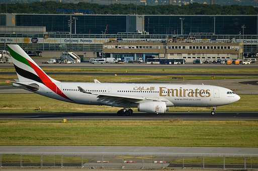

The Airbus A330 is a wide-body aircraft developed and produced by Airbus. Airbus conceived several derivatives of the A300, its first airliner in the mid-1970s. Then the company began development on the A330 twinjet in parallel with the A340 quadjet and launched both designs with their first orders in June 1987. The A330-300, the first variant, took its maiden flight in November 1992 and entered service with Air Inter in January 1994. The slightly shorter A330-200 variant followed in 1998.
The A330 shares its airframe with the early A340 variants, having two main landing gear legs instead of three, lower weights, and slightly different lengths. Both airliners have fly-by-wire controls as well as a similar glass cockpit to increase the commonality. The A330 was Airbus's first airliner to offer a choice of three engines: the General Electric CF6, Pratt & Whitney PW4000, or the Rolls-Royce Trent 700.
The A330-300 has a range of 11,750 km or 6,350 nmi with 277 passengers, while the shorter A330-200 can cover 13,450 km or 7,250 nmi with 247 passengers.Other variants include the A330-200F dedicated freighter, the A330 MRTT military tanker, and the ACJ330 corporate jet. The A330 MRTT was proposed as the EADS/Northrop Grumman KC-45 for the US Air Force's KC-X competition, but lost to the Boeing KC-46 in appeal after an initial win.
In July 2014, Airbus announced the re-engined A330neo (new engine option) comprising A330-800/900, which entered service with TAP Air Portugal in December 2018. With the exclusive, more efficient Trent 7000 turbofan and improvements including sharklets, it offers up to 14% better fuel economy per seat. Earlier A330s (-200/200F/300) are now called A330ceo (current engine option).
Turkish Airlines is currently the largest operator with 61 aeroplanes in its fleet. As of September 2022, A330 orders stood at 1,761 of which 1,548 had been delivered and 1,458 were in service with 134 operators. The global A330 fleet had accumulated more than 60 million flight hours since its entry into service. The A330 is the third most delivered wide-body airliner after the Boeing 777 and Boeing 747. It competes with the Boeing 767, smaller variants of the Boeing 777, and the 787. It is complemented by the larger Airbus A350, which succeeded the four-engined A340.